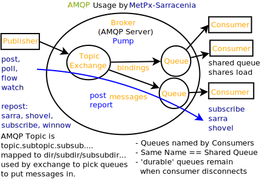

AMQP - Primer for Sarracenia
This is a short but rather dense briefing to explain the motivation for the use of AMQP by the MetPX-Sarracenia data pump. Sarracenia is essentially an AMQP application, so some understanding AMQP is very helpful. AMQP is a vast and interesting topic in it’s own right. No attempt is made to explain all of it here. This brief just provides a little context, and introduces only background concepts needed to understand and/or use Sarracenia. For more information on AMQP itself, a set of links is maintained at the Metpx web site but a search engine will also reveal a wealth of material.
AMQP Feature Selection
AMQP is a universal message passing protocol with many different options to support many different messaging patterns. MetPX-sarracenia specifies and uses a small subset of AMQP patterns. An important element of Sarracenia development was to select from the many possibilities a small subset of methods are general and easily understood, in order to maximize potential for interoperability.
Analogy FTP
Specifying the use of a protocol alone may be insufficient to provide enough information for data exchange and interoperability. For example when exchanging data via FTP, a number of choices need to be made above and beyond the protocol.
authenticated or anonymous use?
how to signal that a file transfer has completed (permission bits? suffix? prefix?)
naming convention
text or binary transfer
Agreed conventions above and beyond simply FTP (IETF RFC 959) are needed. Similar to the use of FTP alone as a transfer protocol is insufficient to specify a complete data transfer procedure, use of AMQP, without more information, is incomplete. The intent of the conventions layered on top of AMQP is to be a minimum amount to achieve meaningful data exchange.
AMQP: not 1.0, but 0.8 or 0.9
AMQP 1.0 standardizes the on-the-wire protocol, but removed all broker standardization. As the use of brokers is key to Sarracenia´s use of, was a fundamental element of earlier standards, and as the 1.0 standard is relatively controversial, this protocol assumes a pre 1.0 standard broker, as is provided by many free brokers, such as rabbitmq and Apache QPid, often referred to as 0.8, but 0.9 and post 0.9 brokers could inter-operate well.
Named Exchanges and Queues
In AMQP prior to 1.0, many different actors can define communication parameters, such as exchanges to publish to, queues where notification messages accumulate, and bindings between the two. Applications and users declare and user their exchanges, queues, and bindings. All of this was dropped in the move to 1.0 making topic based exchanges, an important underpinning of pub/sub patterns much more difficult.
in AMQP 0.9, one subscriber can declare a queue, and then multiple processes (given the right permissions and the queue name) can consume from the same queue. That requires being able to name the queue. In another protocol, such as MQTT, one cannot name the queue, and so this processing pattern is not supported.
The mapping convention described in Topic, allows MQTT to establish separate hierarchies which provides a fixed distribution among the workers, but not exactly the self-balancing shared queue that AMQP provides.
Note
In RabbitMQ (the initial broker used), permissions are assigned using regular expressions. So a permission model where AMQP users can define and use their exchanges and queues is enforced by a naming convention easily mapped to regular expressions (all such resources include the username near the beginning). Exchanges begin with: xs_<user>_. Queue names begin with: q_<user>_.
Topic-based Exchanges
Topic-based exchanges are used exclusively. AMQP supports many other types of exchanges, but sr3_post have the topic sent in order to support server side filtering by using topic based filtering. At AMQP 1.0, topic-based exchanges (indeed all exchanges, are no longer defined.) Server-side filtering allows for much fewer topic hierarchies to be used, and for much more efficient subsciptions.
In Sarracenia, topics are chosen to mirror the path of the files being announced, allowing straight-forward server-side filtering, to be augmented by client-side filtering on message reception.
The root of the topic tree is the version of the message payload. This allows single brokers to easily support multiple versions of the protocol at the same time during transitions. v02, created in 2015, is the third iteration of the protocol and existing servers routinely support previous versions simultaneously in this way. The second sub-topic defines the type of message. At the time of writing: v02.post is the topic prefix for current notification messages.
Little Data
The AMQP messages contain notification messages, no actual file data. AMQP is optimized for and assumes small messages. Keeping the messages small allows for maximum message throughtput and permits clients to use priority mechanisms based on transfer of data, rather than the notification messages. Accomodating large messages would create many practical complications, and inevitably require the definition of a maximum file size to be included in the message itself, resulting in complexity to cover multiple cases.
Sr3_post is intended for use with arbitrarily large files, via segmentation and multi-streaming. Blocks of large files are announced independently and blocks can follow different paths between initial pump and final delivery. The protocol is unidirectional, in that there is no dialogue between publisher and subscriber. Each post is a stand-alone item that is one message in a stream, which on receipt may be spread over a number of nodes.
However, it is likely that, for small files over high latency links, it is more efficient to include the body of the files in the notification messages themselves, rather than forcing a separate retrieval phase. The relative advantage depends on:
relative coarseness of server side filtering means some filtering is done on the client side. Any data embedded for notification messages discarded on the client-side are waste.
Sarracenia establishes long-lived connections for some protocols, such as SFTP, so the relative overhead for a retrieval may not be long.
One will achieve a higher messaging rate without data being embedded, and if the notification messages are distributed to a number of workers, it is possible that the resulting message rate is higher without embedded data (because of faster distribution for parallel download) than the savings from embedding.
the lower the latency of the connection, the lesser the performance advantage of embedding, and the more it becomes a limiting factor on high performance transfers.
Further work is needed to better clarify when it makes sense to embed content in notification messages. For now, the content header is included to allow such experiments to occur.
Other Parameters
AMQP has many other settings, and reliability for a particular use case is assured by making the right choices.
persistence (have queues survive broker restarts, default to true),
expiry (how long a queue should exist when no-one is consuming from it. Default: a few minutes for development, but can set much longer for production)
message_ttl (the life-span of queued notification messages. Messages that are too old will not be delivered: default is forever.)
Pre-fetch is an AMQP tunable to determine how many notification messages a client will retrieve from a broker at once, optimizing streaming. (default: 25)
These are used in declarations of queues and exchanges to provide appropriate message processing. This is not an exhaustive list.
Mapping AMQP Concepts to Sarracenia
{kind=link}
An AMQP Server is called a Broker. Broker is sometimes used to refer to the software, other times server running the broker software (same confusion as web server.) In the above diagram, AMQP vocabulary is in Orange, and Sarracenia terms are in blue.
There are many different broker software implementations. We use rabbitmq. Not trying to be rabbitmq specific, but management functions differ between implementations. So admin tasks require ‘porting’ while the main application elements do not.
- Queues are usually taken care of transparently, but you need to know
A Consumer/subscriber creates a queue to receive notification messages.
Consumer queues are bound to exchanges (AMQP-speak)
- An exchange is a matchmaker between publisher and consumer queues.
A message arrives from a publisher.
message goes to the exchange, is anyone interested in this message?
in a topic based exchange, the message topic provides the exchange key.
interested: compare message key to the bindings of consumer queues.
message is routed to interested consumer queues, or dropped if there aren’t any.
- Multiple processes can share a queue, they just take turns removing notification messages from it.
This is used heavily for sr_sarra and sr_subcribe multiple instances.
Queues can be durable, so even if your subscription process dies, if you come back in a reasonable time and you use the same queue, you will not have missed any notification messages.
- How to Decide if Someone is Interested.
For Sarracenia, we use (AMQP standard) topic based exchanges.
Subscribers indicate what topics they are interested in, and the filtering occurs server/broker side.
Topics are just keywords separated by a dot. wildcards: # matches anything, * matches one word.
We create the topic hierarchy from the path name (mapping to AMQP syntax)
Resolution & syntax of server filtering is set by AMQP. (. separator, # and * wildcards)
Server side filtering is coarse, notification messages can be further filtered after download using regexp on the actual paths (the reject/accept directives.)
- topic prefix? We start the topic tree with fixed fields
v02 the version/format of sarracenia notification messages.
post … the message type, this is an notification message of a file (or part of a file) being available.
Sarracenia is an MQP Application
in Version 2, MetPX-Sarracenia is only a light wrapper/coating around AMQP. in Version 3, this was reworked and an MQTT driver was added to make it less AMQP specific.
A MetPX-Sarracenia pump is a python AMQP application that uses an (rabbitmq) broker to co-ordinate SFTP and HTTP client data transfers, and accompanies a web server (apache) and sftp server (openssh) on the same user-facing address.
Wherever reasonable, we use their terminology and syntax. If someone knows AMQP, they understand. If not, they can research.
Users configure a broker, instead of a pump.
users explicitly can pick their queue names.
users set subtopic,
topics with dot separator are minimally transformed, rather than encoded.
queue durable.
we use message headers (AMQP-speak for key-value pairs) rather than encoding in JSON or some other payload format.
- reduce complexity through conventions.
use only one type of exchanges (Topic), take care of bindings.
- naming conventions for exchanges and queues.
exchanges start with x. - xs_Weather - the exchange for the source (amqp user) named Weather to post notification messages - xpublic – exchange used for most subscribers.
queues start with q
Internet resources are more useful and reduce our documentation burden.
We write less code (exposing raw AMQP means less glue.)
Less potential for bugs/ higher reliability.
we make minimum number of choices/restrictions
set sensible defaults.
Review
If you understood the rest of the document, this should make sense to you:
An AMQP broker is a server process that houses exchanges and queues used to route notification messages with very low latency. A publisher sends notification messages to an exchange, while a consumer reads notification messages from their queue. Queues are bound to exchanges. Sarracenia links a broker to a web server to provide fast notifications, and uses topic exchanges to enable consumers’ server side filtering. The topic tree is based on the file tree you can browse if you visit the corresponding web server.
Appendix A: Background
Why Use AMQP?
open standard, multiple free implementations.
low latency message passing.
encourages asynchronous patterns/methods.
language, protocol & vendor neutral.
very reliable.
robust adoption (next two sections as examples)
Where does AMQP Come From?
Open International standard from financial world.
Many proprietary similar systems exist, AMQP built to get away from lock-in. Standard is built with long experience of vendor messaging systems, and so quite mature.
invariably used behind the scenes as a component in server-side processing, not user visible.
many web companies (soundcloud)
seeing good adoption in monitoring and integration for HPC
Intel/Cray HPC Stack
{kind=link}
OpenStack
AMQP is the messaging technology chosen by the OpenStack cloud.

How to Adopt AMQP
Adopting AMQP is more like adopting XML than it is like adopting FTP. FTP interoperability is easy as choices are limited. With XML, however you get more palette than painting. Many different dialects, schema methods, etc… XML will be valid and parse, but without additional standardization, data exchange remains uncertain. For real interoperabiltiy, one must standardize specific dialects. Examples:
RSS/Atom,
Common Alerting Protocol (CAP)
AMQP brokers and the client software can connect and send notification messages, but without additional standardization, applications will not communicate. AMQP calls those additional layers applications. AMQP enables every conceivable message pattern, so a well formed application is built by eliminating features from consideration, choosing the colours to use. Sarracenia is an applicaton of AMQP message passing to file transfer.
As CAP narrows XML, Sarracenia narrows the scope of AMQP. This narrowing is necessary to obtain a useful result: Interoperability. Sarracenia conventions and formats are defined in: